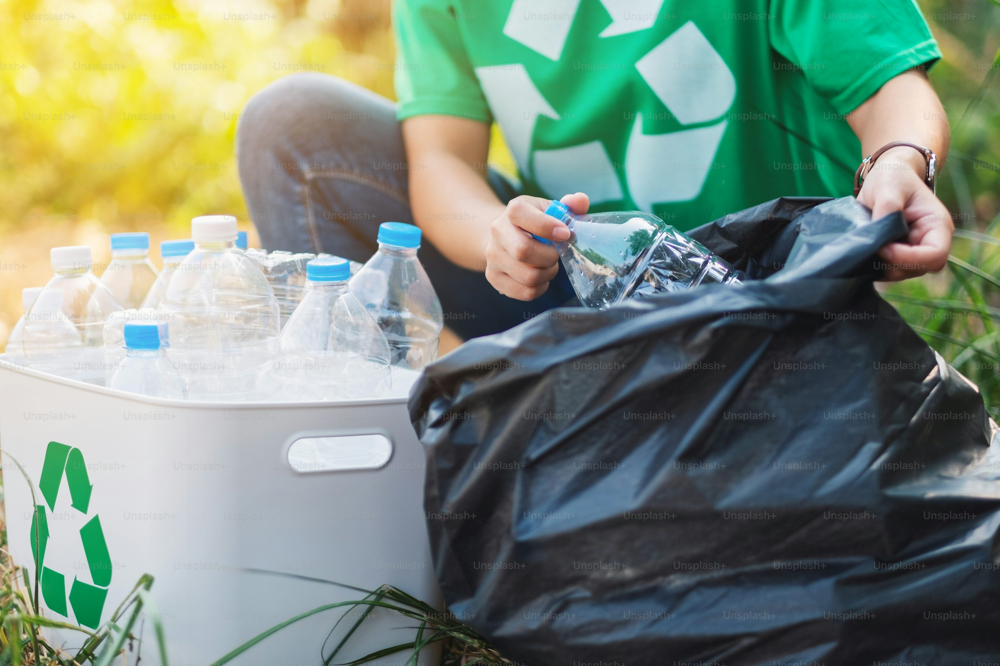
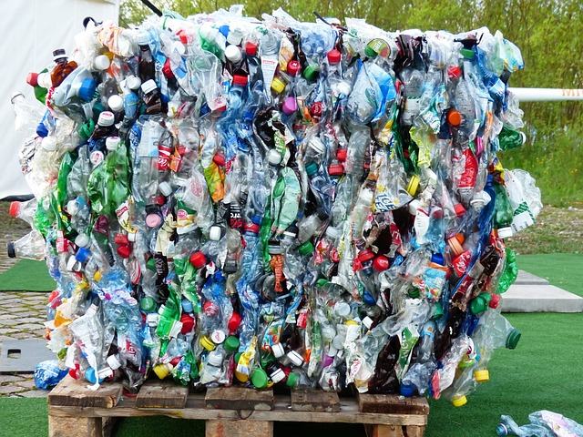

Hva er Resirkulering?
Resirkulering er prosessen der vi omgjør avfall til nye materialer eller produkter. Dette bidrar til å redusere behovet for å utvinne råmaterialer og minker avfallsmengdene på deponier.
I Norge er kommunene ansvarlige for organiseringen av avfallshåndtering, noe som sikrer et system der alle kan bidra til en mer bærekraftig fremtid. I tillegg støtter staten initiativer for bedre resirkulering gjennom ulike tilskudd og lovgivning.

Rangering av Fylker
Gjenvinningsraten varierer mellom de ulike fylkene. Her er en oversikt over de beste og dårligste fylkene i Norge:
| Fylke | Gjenvinning (%) |
|---|---|
| Innlandet | 85% |
| Vestfold og Telemark | 82% |
| Trøndelag | 80% |
| Vestland | 65% |
| Troms og Finnmark | 60% |
Sorter Boss!
Prøv deg på dette morsomme spillet der du skal sortere avfall i riktig kategori. Dra og slipp hvert element i rett boks!
Dra avfall til riktig kategori for å begynne!
Utfordringer i Resirkulering
- Plast havner ofte i restavfallet istedenfor riktig beholder.
- Mangel på kunnskap om hva som kan resirkuleres.
- Lang transport til resirkuleringsanlegg for avsidesliggende fylker.
- Ulikt regelverk på tvers av kommuner og fylker.
Forbedringstiltak som kan hjelpe inkluderer økt bevissthet, teknologiske innovasjoner og standardiserte regler. Det er viktig at alle innbyggere, fra barn til voksne, lærer hvordan de kan bidra til et grønnere samfunn.

Innovasjon i Resirkulering
Teknologiske fremskritt har gjort det lettere å resirkulere mer effektivt. For eksempel har automatiserte sorteringsanlegg og smart teknologi som identifiserer avfall etter type blitt introdusert. Slike teknologier kan redusere menneskelige feil og øke gjenvinningsraten betydelig.
I tillegg utvikles nye materialer som er lettere å resirkulere, som bioplast, som kan være et alternativ til tradisjonell plast i fremtiden. Norge har gjort store fremskritt innen resirkulering, men det er store geografiske forskjeller. Tall fra Grønt Punkt Norge viser at noen regioner utmerker seg som spesielt gode på resirkulering, mens andre har et betydelig forbedringspotensial.
Hvordan er avfallssortering organisert i Norge?
Kommunene er ansvarlige for innsamling og behandling av husholdningsavfall, og de fleste har samarbeidsavtaler gjennom interkommunale renovasjonsselskaper. I tillegg til husholdningsavfall er det mange steder separate ordninger for næringsavfall. Dette sikrer at både privatpersoner og bedrifter kan bidra til økt materialgjenvinning.
Det er flere avfallsfraksjoner som skal sorteres i de fleste kommuner:
- Restavfall: Avfall som ikke kan resirkuleres.
- Plastemballasje: Myk og hard plast.
- Papir og kartong: Alt fra aviser til melkekartonger.
- Glass og metall: Flasker, syltetøyglass og hermetikk.
- Matavfall: Organisk avfall som kan brukes til biogassproduksjon.
- Farlig avfall: Batterier, maling, kjemikalier.
- Elektronisk avfall: Elektriske apparater og elektronikk.
En viktig milepæl kom i 2023, da alle kommuner ble pålagt å sikre kildesortering av matavfall, hageavfall og plastavfall. Dette kravet er ment å øke materialgjenvinningen og redusere miljøbelastningen fra avfall.
Test Kunnskap!
Hvor mye kan du om resirkulering? Ta vår quiz og finn ut hvordan du står til på området!
Svar på quizzen for å finne ut mer!
Resultater fra Intervju
Jeg intervjuet tre familiemedlemmer om deres resirkuleringsvaner. Her er hva jeg fant ut:
Pappa
Pappa er veldig flink til å resirkulere og vet alltid hvor ting skal kastes. Han sørger for at plast, papir, og glass havner i riktige beholdere.
Mamma
Mamma er like bevisst på resirkulering som pappa. Hun følger alltid råd og passer på at avfall blir sortert riktig.
Lillesøster
Lillesøster har litt å lære om resirkulering. Hun kaster ofte søppel rett i bosset i stedet for å bruke riktig beholder under vasken.
Dette viser at selv innenfor en familie kan vanene variere, og det er viktig å jobbe sammen for bedre resirkulering!